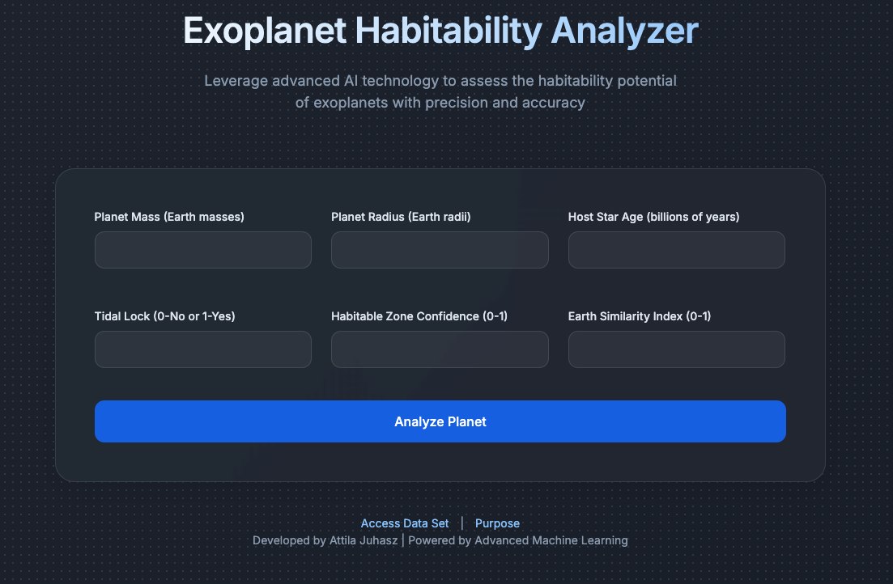

For about a century, human beings have searched for life outside of Earth. We’ve sent the Voyager spacecrafts with the Golden Record, which contains a variety of different aspects connected to human life and the coordinates of where to find Earth, with the hope that aliens will someday stumble upon it and try to come in contact with us. In order for aliens to even exist, they must be living on a planet that is able to house life—and for a planet to house life, there are specific criteria it must meet.
This criterion includes size, composition, mass, and various other factors. Using these elements, you can predict whether a planet is habitable. With the help of the PHL Exoplanet Catalog—a dataset that contains this exact information for over four thousand already-discovered exoplanets that we have confirmed to be habitable or not—I was able to train an AI to predict whether a planet could accommodate life. For AI to accurately determine something, it needs to be trained on data and must gain a large range of useful input from a user. Knowing this, I used planet mass, radius, host star age, Earth similarity, habitable zone confidence, and whether it is tidally locked to predict with 98.9% accuracy if that planet is suitable. To access the AI, click this link or tap the image.
Once a user inputs data into each box and clicks Analyze Planet, the artificial intelligence in the backend of the software will compare that data to the thousands of other exoplanets to determine if that planet can house life. Under that, the AI gives the user a percentage that indicates the likeliness of habitability. The larger the percentage, the more likely the planet can support living organisms.
With this software, researchers and scientists will be able to collect data from newly discovered exoplanets and plug them into this AI. Before this, people had to take days, maybe even weeks, trying to determine whether a planet is habitable by comparing it to hundreds of thousands of other planets. But now, using this program, experts will be able to save countless hours and be able to dedicate more time to other forms of research.
Humanity has never been more close to discovering alien life because of advances in technology and knowledge. With this new innovation, uncovering and coming in contact with alien life might just be a possibility in our lifetime.